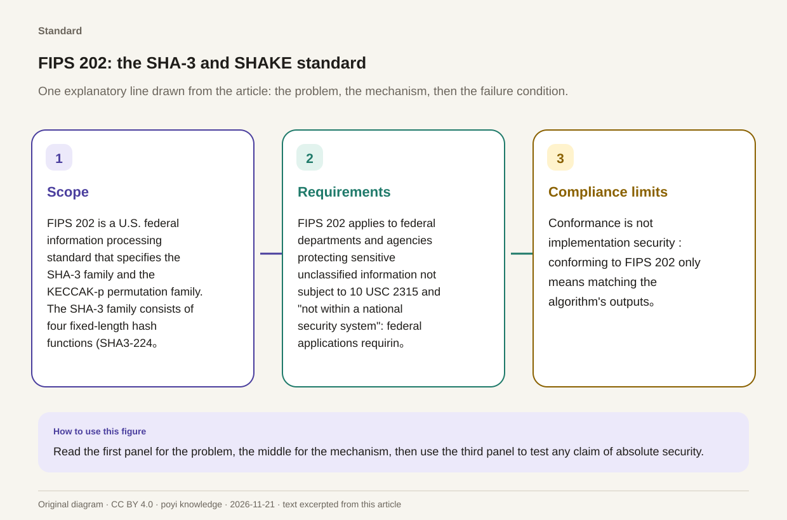
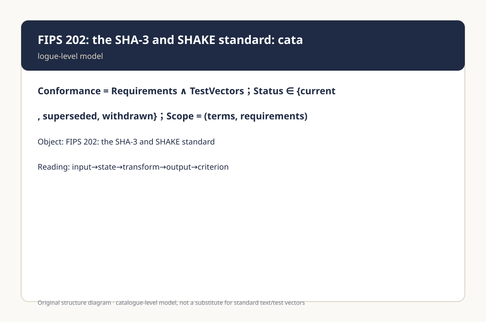

Principles
Standard: SHA-3 Standard (SHA-3 标准). FIPS 202 is a U.S. federal information processing standard that specifies the SHA-3 family and the KECCAK-p permutation family. The SHA-3 family consists of four fixed-length hash functions (SHA3-224, SHA3-256, SHA3-384 and SHA3-512) and two extendable-output functions (SHAKE128 and SHAKE256); all six are sponge modes of KECCAK-p[1600,24]. The sponge construction treats the input as a bit string, absorbs it into a 1600-bit state in rate-sized blocks, and keeps a capacity c = 1600 - r that is not directly exposed; after absorption it squeezes r bits at a time until the requested length is reached. SHA3-224, SHA3-256, SHA3-384 and SHA3-512 use rates of 1152, 1088, 832 and 576 bits, capacities of 448, 512, 768 and 1024 bits, and digest lengths of 224, 256, 384 and 512 bits. SHAKE128 and SHAKE256 use rates of 1344 and 1088 bits and capacities of 256 and 512 bits; the caller chooses the output length d. The six functions use suffixes for domain separation: SHA-3 hashes append 01 to the message, SHAKE appends 1111, and RawSHAKE128/256 use 11, with the equivalent definition SHAKE128(M,d) = RawSHAKE128(M||11,d). For byte-aligned messages, q ≥ 2 SHA-3 padding starts with 0x06 and SHAKE with 0x1F and ends with 0x80; for q = 1 these bytes merge into 0x86/0x9F. Table 6 gives the q = 1, q = 2 and q > 2 forms 0x86/0x0680/0x06 00...80 and 0x9F/0x1F80/0x1F 00...80. Messages are processed as bit strings; Appendix B defines the h2b/b2h conversions between hexadecimal strings and bit strings. The state is a 5x5x64-bit array, and KECCAK-p[1600,24] runs 24 rounds, each applying the five steps theta, rho, pi, chi and iota. The HMAC input block size B for the SHA-3 hashes is the rate in bytes: 144 for SHA3-224, 136 for SHA3-256, 104 for SHA3-384 and 72 for SHA3-512. Appendix A, Table 4, lists the collision, preimage and second-preimage security strengths of the SHA-3 members.

Why it matters
FIPS 202 standardizes the winner of the SHA-3 competition as a second hash standard alongside SHA-1 and SHA-2. The standard explains that the four SHA-3 hashes complement SHA-1/SHA-2 in FIPS 180-4: they use different design principles, providing design diversity against future advances in hash analysis, together with "some complementary implementation and performance characteristics".
SHAKE128 and SHAKE256 are the first extendable-output functions standardized by NIST; applications choose the number of output bits they need. The standard also parameterizes KECCAK-p[b,nr] so future modes can be built on the same permutation family. It provides a CAVP validation route: the SHA-3 functions, KECCAK-p[1600,24] and the six modes can be tested for conformance under CAVP.
Applications
FIPS 202 applies to federal departments and agencies protecting sensitive unclassified information not subject to 10 USC 2315 and "not within a national security system": federal applications requiring a secure hash algorithm implement FIPS 202 or FIPS 180. SHA3-224/256/384/512 are "approved cryptographic hash functions" and can be used in HMAC and other approved uses; the HMAC input block sizes in Table 3 are 144, 136, 104 and 72 bytes.
SHAKE128/256 are approved extendable-output functions, and their specific approved uses are specified in NIST Special Publications; FIPS 202 does not approve SHAKE as a hash function. Implementations may be software, firmware or hardware, but only implementations validated by CAVP are considered compliant; the standard allows mathematically equivalent replacement steps; OIDs are published separately by NIST. FIPS 202's user-facing functions are these six, plus KECCAK-p and intermediate functions; it does not specify derived functions such as cSHAKE, KMAC, TupleHash or ParallelHash, which are specified in SP 800-185.

Limits & attacks
Conformance is not implementation security: conforming to FIPS 202 only means matching the algorithm's outputs; the standard explicitly says that conformance "does not assure that a particular implementation is secure", so side channels, key management, protocols and deployment still need separate assessment.
Related XOF outputs: output length does not participate in domain separation, and a shorter output is a prefix of a longer one; different output lengths for the same message produce related results. Do not treat output length as a domain label; in key derivation, incorporate the length and type into the input or use a dedicated domain separation.
SHAKE's approval boundary: SHAKE is an approved extendable-output function, not an approved hash function; collision and preimage security decrease with small d. Use SHA3-224/256/384/512 when a fixed-length hash is required, not SHAKE as a hash function.
Standard scope: FIPS 202 does not specify cSHAKE, KMAC, TupleHash or ParallelHash; these derived functions are defined in SP 800-185. FIPS 202 is also not a general KDF or protocol specification; HMAC is specified in FIPS 198-1.
Bit strings and interoperability: the standard is defined on bit strings, with byte alignment as a common special case; a conforming implementation may restrict the supported message or output lengths, creating interoperability differences. The standard body refers detailed security analysis to the Keccak and sponge literature rather than restating the full analysis.
History
- 2007-2012: NIST runs the SHA-3 Cryptographic Hash Algorithm Competition. - 2 October 2012: NIST announces Keccak as the SHA-3 competition winner. - August 2015: FIPS 202 is published, and the standard is effective immediately. - December 2016: SP 800-185 is published, specifying cSHAKE, KMAC, TupleHash and ParallelHash.
The SHA-3 functions differ slightly from the competition's Keccak: SHA-3 hashes append a two-bit suffix to the message to distinguish hashes from XOFs and to leave room for future domain variants.
Worked example & verification
Worked example
Take one published or standard test vector, record the input, the ordered steps and the byte-exact output, then compare with an independent implementation. Where no citable numeric vector is available, the entry records only structural steps and does not invent an output.
References
- Wikipedia search entry for SHA-3 标准. https://zh.wikipedia.org/w/index.php?search=SHA-3%20%E6%A0%87%E5%87%86
- Handbook of Applied Cryptography (Menezes, van Oorschot, Vanstone). https://www.cacr.math.uwaterloo.ca/hac/
- NIST FIPS 202: SHA-3 Standard. https://csrc.nist.gov/pubs/fips/202/final
- Published standard/RFC for SHA-3 标准. https://csrc.nist.gov/pubs/fips/202/final